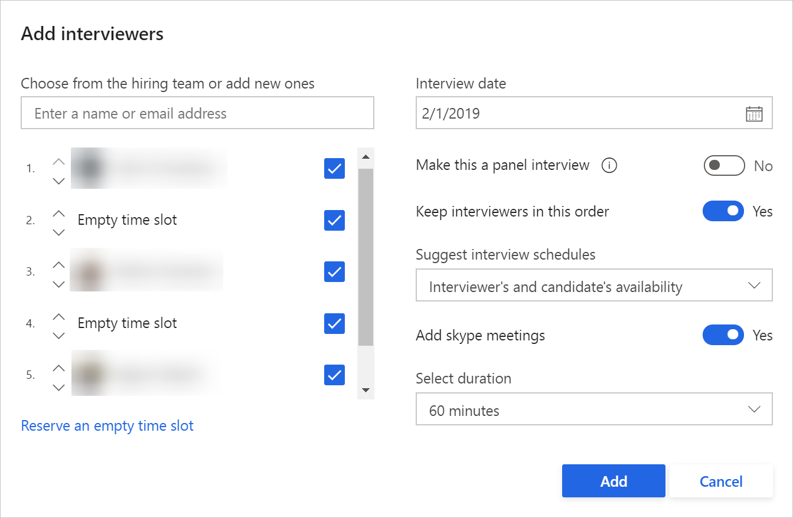

Planen von Interviews in Attract
Important
Dynamics 365 Talent: Attract- und Onboard-Apps werden eingestellt. Weitere Informationen finden Sie unter Einstellen von Dynamics 365 Talent: Attract- und Onboard-Apps.
Planeraktivität
Die Planungsaktivität ist optional und enthält zwei Komponenten: Kandidatenverfügbarkeitsanforderung und Zeitplan. Mit der Kandidatenverfügbarkeitskomponente können Sie E-Mail verwenden, um die Verfügbarkeit des Kandidaten anzufordern. Die Zeitplankomponente bietet die Möglichkeit, Gespräche mit dem Kandidaten und dem Einstellungsteam zu planen.
Um die Planungsaktivität so einzurichten, dass Sie die Kandidaten einbeziehen oder einschränken können, wählen Sie einen Wert im Feld Planung aus. Die verfügbaren Optionen sind Alle Kandidaten, Externe Kandidaten und Interne Kandidaten. Wenn Sie zum Beispiel interne Kandidaten in der ersten Planungsrunde auslassen möchten, können Sie die Zeitplanaktivität nur externen Kandidaten zuweisen, indem Sie das Feld Planung auf Externe Kandidaten festlegen.
Kandidatenverfügbarkeitsanforderung
Um den Kandidaten eine E-Mail zu senden, um ihre Verfügbarkeit anzufordern, wählen SIe das Feld Kandidatenverfügbarkeit anfordern aus. Wenn das Feld nicht ausgewählt wird, wird dieser Schritt nicht im Einstellungsprozess für die Stelle angezeigt.
Um die Verfügbarkeitsanforderung zu senden, klicken Sie auf Anforderung senden, wählen Sie die verfügbaren Daten und eine E-Mail-Vorlage aus, und senden Sie dann die E-Mail an den Kandidaten.
{kind=link}
Wenn der Kandidat eine E-Mail erhält, um auf die Anforderung zu antworten, können sie sich beim Kandidatenportal anmelden, die Datumsangaben gemäß ihrer Verfügbarkeit auswählen, und auf Übermitteln klicken.
Planung
Es gibt die mehrere Konfigurationen, die für den Gesprächsplaner verfügbar sind, um die Gesprächsschleife schnell zu erstellen und an die Gesprächsleiter und den Kandidaten zu senden.
Klicken Sie auf Zeitplan erstellen, und listen Sie im Feld Gesprächsleiter hinzufügen alle Gesprächsleiter auf, die Teil der Gesprächsschleife sein werden. 
Wenn der Kandidat auf die Gesprächsverfügbarkeitsanforderung geantwortet hat, wird das Feld Datum des Gesprächs mit seiner Auswahl voraufgefüllt. Sie können bei Bedarf ein anderes Datum auswählen.Wenn Sie das Feld Dies zu einem Gruppengespräch machen auswählen, wird die Gruppe der Gesprächsleiter auf der linken Seite in eine Einzelgruppenschleife verschoben, um das Gespräch zu erstellen. Sie müssen dann einen bestimmten Nummernkreis für die Gespräche definieren.
Der Gesprächszeitplan sollte der Verfügbarkeit der Teilnehmer bestmöglich entsprechen. Wenn es ein interner Kandidat ist, können Sie ihre Verfügbarkeit als Teil der Zeitplanempfehlung einbeziehen.
Wählen Sie für eine Online-Besprechung das Feld Skype-Besprechungen hinzufügen aus, und für jedes Gesprächsereignis wird ein Skype for Business-Link verfügbar sein.
Wählen Sie die Gesprächsdauer für jedes Gesprächsereignis aus, und klicken Sie dann auf OK, um die Erstellung des Zeitplans zu starten.
Wenn Empfehlungen ausgewählt werden, werden Vorschläge angezeigt und das Gesprächsraster wird voraufgefüllt. Sie sind dann in der Lage, die aktuelle Kalenderverfügbarkeit aller ausgewählten Gesprächsleiter anzuzeigen. Darüber hinaus können Sie den Kalender des Kandidaten anzeigen, wenn sie ein interner Kandidat sind. Für die Befragungspersonen und internen Kandidaten können Sie ihre gebuchten Zeiten, ihre Arbeitszeiten und ihre Abwesenheiten anzeigen und auch identifizieren, ob sie im Kalender bestimmte Zeiten markiert haben, an denen sie anderswo areiten.
Wenn keine Vorschläge verfügbar sind, klicken Sie in der Spalte Gesprächsleiter auf einen Zeitrahmen, geben Sie den Gesprächstitel und die Details an, und füllen Sie ggf. Informationen zum Ort auf. Falls gewünscht, können Sie den Skype for Business-Link für das Gespräch einbeziehen.
Um zusätzliche Gesprächsleiter einzubeziehen, klicken Sie auf die Rasterspalte Gespräch hinzufügen, um einen oder mehrere Gesprächsleiter auszuwählen. Mithilfe der Option der Auslassungspunkte (...) können Sie ein Gespräch aus der Schleife entfernen.
Wenn die Gespräche in einer anderen Zeitzone geplant werden, wählen Sie den erforderlichen Ort/die erforderliche Zeitzone aus der Dropdownliste oben rechts aus. Das Gesprächsleiterverfügbarkeitsraster wird mit der neuen Zeitzone aktualisiert. Diese Zeitzonen-Auswahl wird nun auch bei der Ansicht Gesprächszusammenfassung angezeigt, die für die Gesprächsleiter und den Kandidaten freigegeben wird.
Klicken Sie auf An Gesprächsleiter senden, um die Besprechungseinladungen an die beteiligten Gesprächsleiter zu senden.
Nachdem die Gesprächsanforderungen an die Gesprächsleiter gesendet wurden, können sie direkt aus der erhaltenen E-Mail-Einladung antworten.
Note
Für alle 1:1-Gespräche werden Erinnerungen zu den Befragungspersonen alle 24 Stunden gesendet, wenn die Befragungsperson (angenommen oder abgelehnt) nicht auf die Gesprächsanforderung reagiert hat.
Für alle Bereichsgespräche gibt es keine automatischen Erinnerungen für die Gesprächsanforderung. Um eine Erinnerung manuell zu starten, bearbeiten Sie das Gespräch und verwenden Sie die Aktualisieren und übermitteln Option, um die Anforderung an die Befragungspersonen zu senden
Gesprächsleiterantworten werden erfasst und in Attract angezeigt. Wenn ein Gesprächsleiter die Einladung ablehnt, werden Sie benachrichtigt, um eine Änderung vorzunehmen. Um ihre Antwort in der Rasteransicht Planer anzuzeigen, klicken Sie auf das Blasen-Symbol.
{kind=link}
{kind=link}
Wenn der Gesprächszeitplan für den Kandidaten freigegeben werden kann, klicken Sie auf Zum Kandidaten senden Sie können die Gesprächsleiternamen und -zeitrahmen für den Kandidaten ausblenden oder anzeigen.
Wählen Sie eine E-Mail-Vorlage aus und senden Sie die Gesprächszusammenfassung an den Kandidaten. Der Kandidat kann diese Informationen in seiner E-Mail sowie im Kandidatenportal anzeigen.
Note
Die Kalenderverfügbarkeit eines Kandidaten wird nur dann angezeigt, wenn der Kandidat intern ist. Ebenso können nur interne Kandidaten verwendet werden, um Gesprächszeitplanempfehlungen zu erweitern. Derzeit erhalten Kandidaten (extern oder intern) keine E-Mail-Besprechungseinladung. Stattdessen erhält der Kandidat nur eine Zusammenfassung der Gespräche.
Kandidaten erhalten eine E-Mail, die das Interview zusammenfasst. Die E-Mails enthalten eine .ics-Datei, die in ihrer persönlichen Kalendern gespeichert werden kann, um einfach darauf zugreifen und die Benachrichtigungen anzeigen zu können.
Tip
Falls Sie den Gesprächsplan den Kandidaten erneut senden, erhalten diese einen anderen .ics-Dateianhang. Es wird empfohlen, die E-Mail-Vorlagen für die Gesprächszusammenfassung des Kandidaten zu aktualisieren, um sicherzustellen, dass Kandidaten das zuvor hinzugefügte Gesprächsereignis löschen und keine Duplikate im Kalender sehen.
Feedbackaktivität
Die Rückmeldungsaktivität einer Stellenvorlage ist optional. Diese Aktivität ermöglicht es Gesprächsteilnehmern, Empfehlungen oder Feedback-Kommentare für einen Bewerber einzugeben.
Um die Kandidaten zum Abgeben von Feedback einzubeziehen oder einzuschränken, wählen Sie einen Wert im Feld Wer sollte der Befragungspersonen Rückmeldung geben aus. Die verfügbaren Optionen sind Alle Kandidaten, Externe Kandidaten und Interne Kandidaten. Wenn Sie zum Beispiel interne Kandidaten in der ersten Runde der Planung überspringen möchten, legen Sie das Feld auf Wer sollte der Befragungspersonen Rückmeldung geben auf Externe Kandidaten fest.
Wenn Sie das Feld Feedbackteilnehmer von Einstellungsteam erben ausgewählt habent, werden der Personalbeschaffer, der zukünftige Vorgesetzte und die Gesprächsleiter automatisch in der Rückmeldungs-Aktivität eingegeben. Organisationen können Gesprächsleitern erlauben, Feedback anderer Personen anzuzeigen, bevor sie ihr eigenes Feedback senden. Organisationen können Gesprächsleitern auch erlauben, ihr Feedback nach dem Senden zu bearbeiten. Gesprächsleiter werden daran erinnert, Rückmeldungen für die Gespräche zu senden, die sie vor kurzem auf Basis der Voreinstellungskonfiguration als Teil der Stellenvorlage geführt haben. Der zukünftige Vorgesetzte oder ein Personalbeschaffer für die Stelle kann einen Gesprächsleiter auch manuell daran erinnern, Feedback zu senden.
Gesprächsaktivität
Die Gesprächsaktivität ist eine optionale Aktivität mit drei Komponenten: Kandidatenverfügbarkeitsanforderung,Zeitplan und Rückmeldung. Verwenden Sie die Gesprächsaktivität in der Stellenvorlage, wenn Sie die gesamte Kandidatenverfügbarkeitsanforderung, den Zeitplan und die Rückmeldung als Teil des Prozesses einbeziehen möchten, anstatt sie einzeln als Teil des Einrichtungsprozesses zu verwenden.
Um Kandidaten einzubeziehen oder zu beschränken, die befragt werden sollen, wählen Sie einen Wert im Feld Wen befragen Sie aus. Die verfügbaren Optionen sind Alle Kandidaten, Externe Kandidaten und Interne Kandidaten. Wenn Sie zum Beispiel interne Kandidaten in der ersten Runde der Befragung überspringen möchten, legen Sie das Feld auf Wen befragen Sie auf Externe Kandidaten fest.